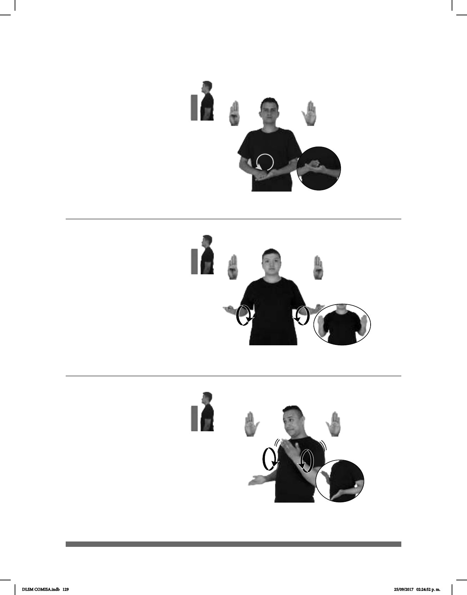

129
(B-P 55)
BACALAR pro-YO GUSTAR VISITAR
Me gustaría visitar Bacalar.
Seña: SB
MD B-P.1, MB B-P.2
MD la palma inicia hacia
abajo y termina hacia la izquierda. MB
palma hacia arriba.
A la altura del pecho. MD
sobre MB.
La MD se desliza sobre
la palma de MB y después se mueve
formando un círculo.
Ciudad del estado de
Quintana Roo perteneciente a los
Estados Unidos Mexicanos.
(B-P 56)
dm-MARIANA BAILAR pro-ELLA GUSTAR
A Mariana le gusta bailar.
1
2
(B-P 57)
AYER NOCHE dm-ISABELA dm-SANTIAGO pro-DOS-DE-ELLOS BAILAR
Isabela y Santiago bailaron anoche.
Seña: SS
B-P.1
Palmas hacia arriba.
A la altura del plexo de
los lados al centro.
Los brazos siguen
una trayectoria de movimientos
circulares.
v. int. Ejecutar
movimientos acompañados con el
cuerpo, brazos y pies.
Seña: SB
MD y MB B-P.2
MD y MB palmas hacia
arriba.
MD y MB a la altura del
pecho.
Los brazos de MD y MB se
mueven formando círculos hacia arriba
alternada y repetidamente.
Se esboza una
sonrisa.
1. v. int. Ejecutar
movimientos acompañados con el cuerpo,
brazos y pies. 2. Movimientos del cuerpo
DLSM COMISA.indb 129 25/09/2017 02:24:52 p. m.